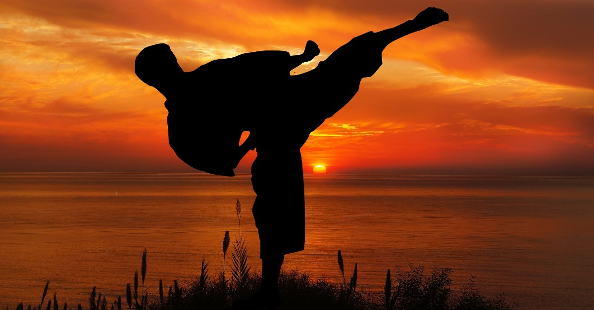

Karate
eyyy

- I have been practicing Isshin-Ryu Karate since 5th grade
- Isshin-Ryu (One-Heart) Karate is an Okinawan martial arts style that was created around the time when World War II ended.
- It's influenced by many other types of karate, like Goju-Ryu and Shorin-Ryu.
- I'm currently a brown belt
- What I've gained from Karate
- I've learned how to be a leader, by leading some karate classes.
- Karate is also a useful stress-coping mechanism, as I pretending that stress is a person when sparring with others.
- Becoming good at something takes time, and I've learned that from practicing daily.
ishaa's home page